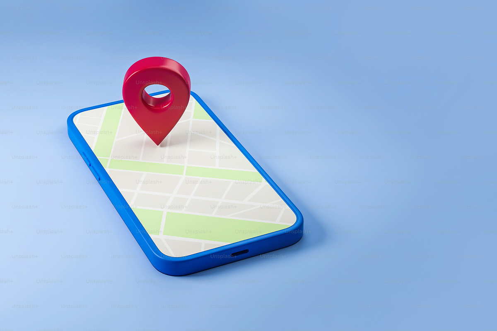
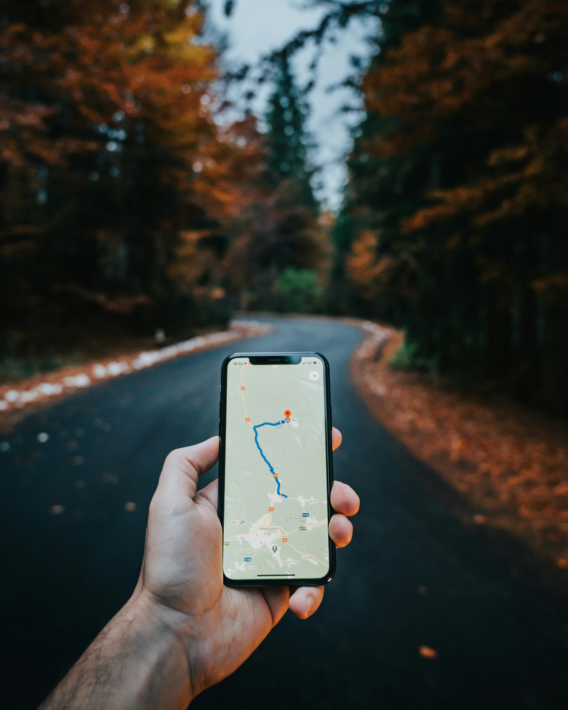

20%
Les seniors de 65 ans et plus représentent 20% des personnes tuées dans un accident de la route.

Réservez vos trajets avec simplicité grâce à notre application mobile pensée pour vos déplacements quotidiens.
20%
Les seniors de 65 ans et plus représentent 20% des personnes tuées dans un accident de la route.
21%
21% des conducteurs présumés responsables d'accidents mortels sur les routes ont plus de 65 ans.
750 000
Le nombre de personnes âgées en situation d’isolement social complet s’élève à 750 000 en France.
Grâce à notre application de location de véhicules autonomes, les personnes âgées retrouve leur autonomie au quotidien.

Planifiez vos déplacements à l’avance pour partir à l’heure, sans stress ni imprévus.

Enregistrez vos arrêts favoris pour planifier vos trajets sans ressaisir vos adresses.
Arrêtez votre trajet en un clic ou rejoignez l’hôpital le plus proche en cas d’urgence.

Martine, 74 ans

Claire, fille
d’utilisatrice

Jean, 79 ans


En quelques clics, voyagez simplement, confortablement et en toute sécurité.
Téléchargez gratuitement notre application Documentation